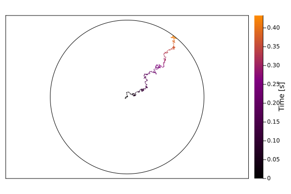

Circular Drift Diffusion Model
The Circular Drift Diffusion Model (CDDM; Brown & Heathcote, 2008) is a sequential sampling model for continuous responding on a circular domain. The CDDM is often used to model visual working memory. In these visual working memory tasks, subjects are briefly presented with a variable number of squares of different colors. After the stimuli are removed, subjects are prompted to use a color wheel to judge the color of a randomly selected square. Currently, the model is restricted to a 2D disk, but future versions may support modeling diffusion processes in hyperspheres.
The figure below illustrates the evidence accumulation process of the CDDM. At the begining of the trial, the evidence accumulation process starts at the center of the circle. As time progresses, the state of the system moves towards the the decision threshold depicted by the circle. Each step is perturbed with some degree of randomness. Once the system reaches the decision threshold, a response based on the position on the circle is given. 
Example
In this example, we will demonstrate how to use the CDDM in a generic two alternative forced choice task.
Load Packages
The first step is to load the required packages.
using LinearAlgebra
using SequentialSamplingModels
using Plots
using Random
Random.seed!(5874)Random.TaskLocalRNG()Create Model Object
In the code below, we will define parameters for the CDDM and create a model object to store the parameter values.
Drift Rates
The mean drift rates $\boldsymbol{\nu}$ control the speed with which information accumulates in the x and y direction.
ν = [5.5,5.0]2-element Vector{Float64}:
5.5
5.0The magnitude of the mean drift rate vector $||\boldsymbol{\nu}||$ is interpreted as the mean accumulation rate.
norm(ν)7.433034373659253The average direction of the accumulation process is given by $\mathrm{arctan}(\frac{\nu_2}{\nu_1})$:
atan(ν[2], ν[1])0.7378150601204649Drift Rate Standard Deviation
The standard deviation of the drift rate $\boldsymbol{\eta}$ is inteprpreted as variability in the evidence accumulation across trials.
η = [.50,.50]2-element Vector{Float64}:
0.5
0.5Threshold
Evidence starts at the center of a circle $(0,0)$ and terminates at a threshold defined by the circumference of the circle. The distance between the starting point and any point on the circumference is given by the radius $\alpha$:
α = 4.04.0Diffusion
Intra-trial variability in the accumulation process is governed by parameter $\sigma$
σ = 1.01.0Non-Decision Time
Non-decision time is an additive constant representing encoding and motor response time.
τ = 0.300.3CDDM Constructor
Now that values have been asigned to the parameters, we will pass them to CDDM to generate the model object.
dist = CDDM(ν, η, σ, α, τ)CDDM
┌───────────┬────────────┐
│ Parameter │ Value │
├───────────┼────────────┤
│ ν │ [5.5, 5.0] │
│ η │ [0.5, 0.5] │
│ σ │ 1.00 │
│ α │ 4.00 │
│ τ │ 0.30 │
└───────────┴────────────┘
Simulate Model
Now that the model is defined, we will generate $10,000$ choices and reaction times using rand. The simulated data is a 2D array in which the first column contains the observed angular responses and the second column contains the corresponding reaction times.
data = rand(dist, 10_000)10000×2 Matrix{Float64}:
0.856649 0.698
0.703405 1.106
0.976653 1.072
0.972483 0.858
0.728791 0.722
1.04316 0.692
0.824157 0.786
1.01249 1.13
0.490162 0.654
0.802511 0.896
⋮
0.455646 0.844
0.696757 0.784
0.624296 0.884
0.860168 0.824
0.726054 0.696
0.513788 0.714
0.911632 1.041
0.721448 1.006
0.9324 0.785Compute PDF
The PDF for each observation can be computed as follows:
pdf(dist, data)10000-element Vector{Float64}:
3.453803663991895
0.4047682288168611
0.3340192941441637
3.3906839690505457
5.736477764598261
1.0817569621639382
7.4729972084164125
0.11321652022360264
0.7057354749018021
5.06751201956543
⋮
2.6408331587906098
8.044623398070392
4.96252060738099
6.565163938514263
4.040002568541011
2.6693741739136656
0.7177888670503146
1.6579685316931942
4.99450128458007Compute Log PDF
Similarly, the log PDF for each observation can be computed as follows:
logpdf(dist, data)10000-element Vector{Float64}:
1.2394761350260204
-0.9044406502134326
-1.0965565207751826
1.221031661823261
1.7468453921226939
0.07858653612150235
2.011296151392134
-2.1784531854899747
-0.3485147931417316
1.622849971233748
⋮
0.9710944578210228
2.0850039674245053
1.6019137986255352
1.8817774790369164
1.3962453277503357
0.9818440531454691
-0.33157981021014393
0.5055930768545807
1.60833756418897Plot Simulation
The code below overlays the PDF on the marginal histograms for angle and reaction time.
histogram(dist)
plot!(dist)References
Smith, P. L. (2016). Diffusion theory of decision making in continuous report. Psychological Review, 123(4), 425.
Smith, P. L., Garrett, P. M., & Zhou, J. (2023). Obtaining Stable Predicted Distributions of Response Times and Decision Outcomes for the Circular Diffusion Model. Computational Brain & Behavior, 1-13.